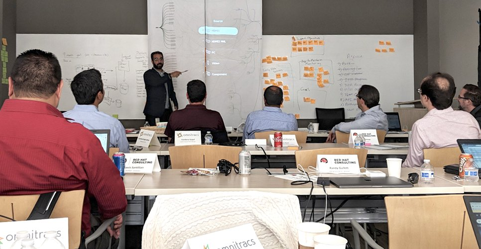
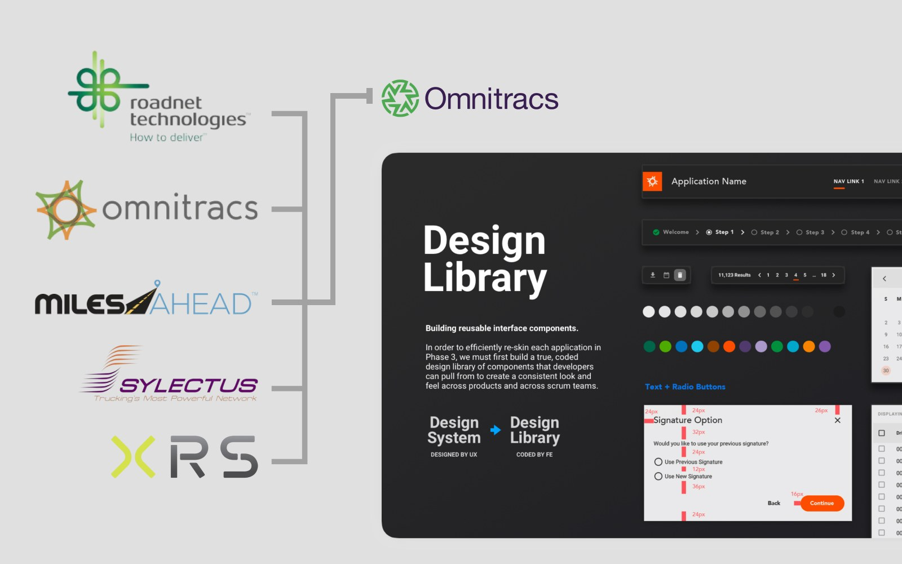
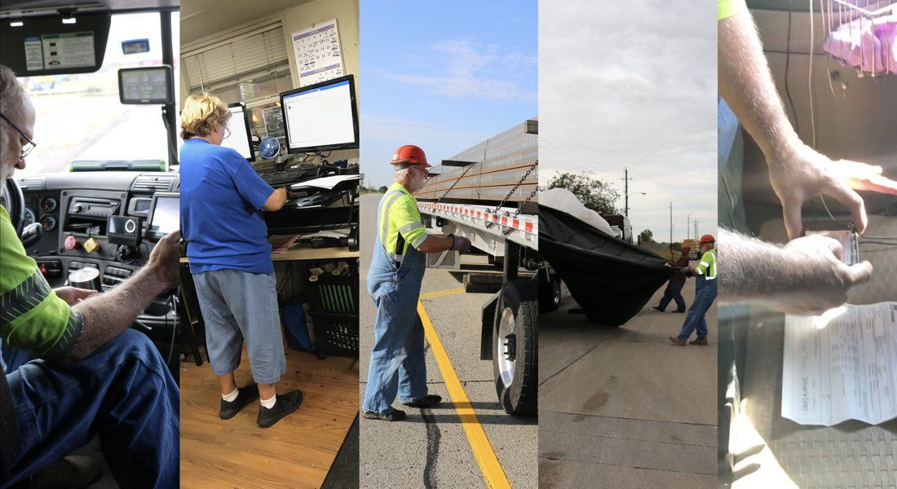
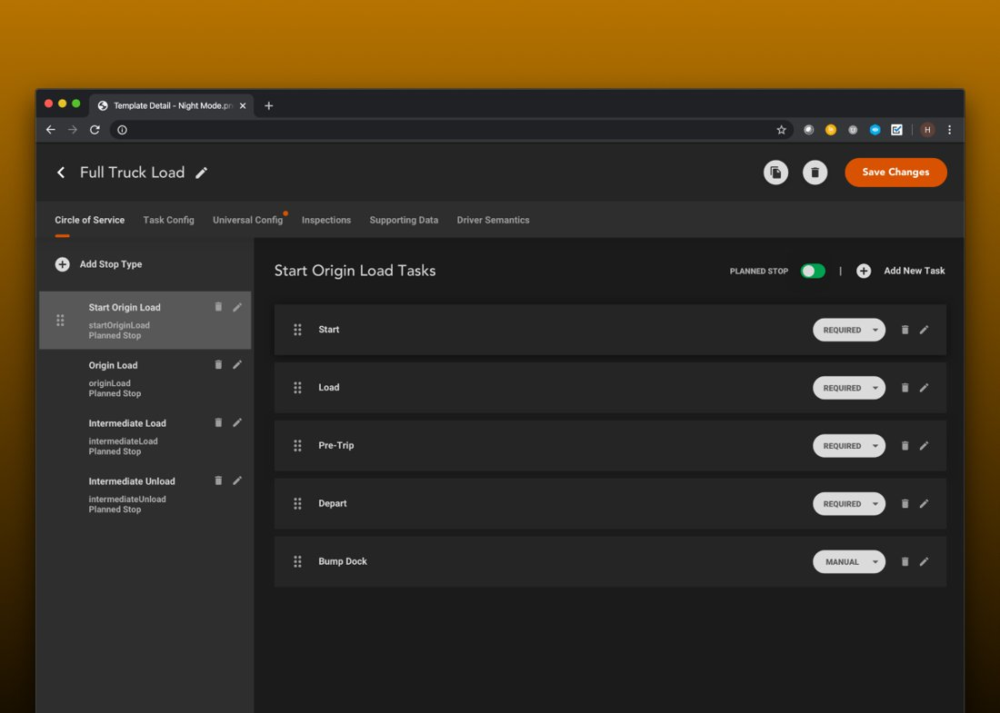
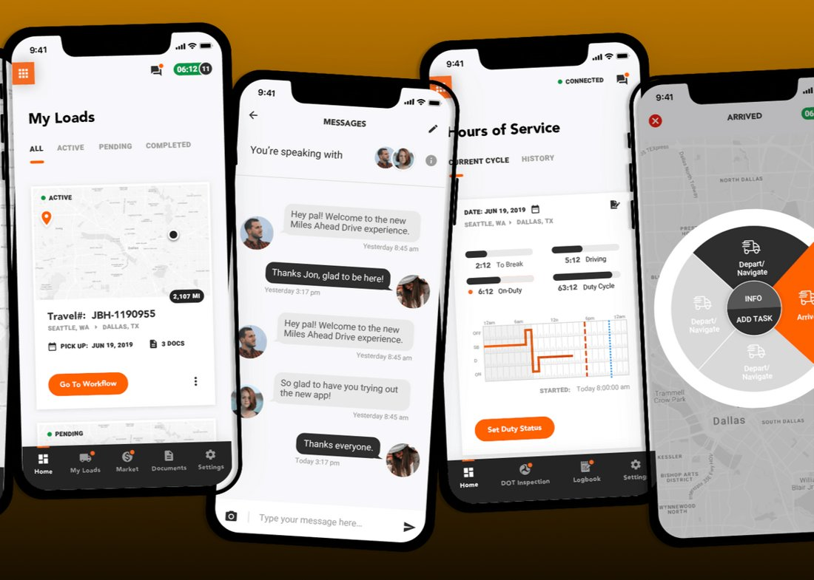
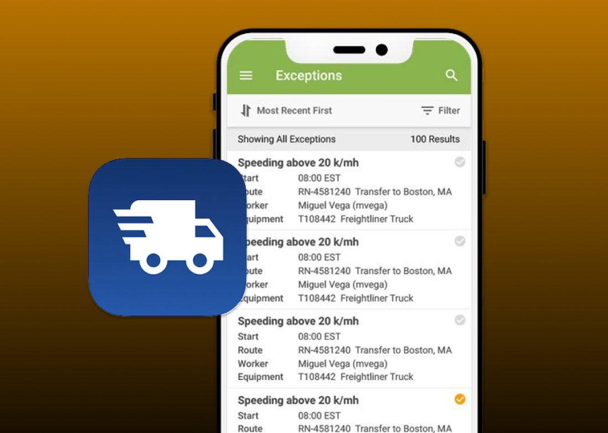
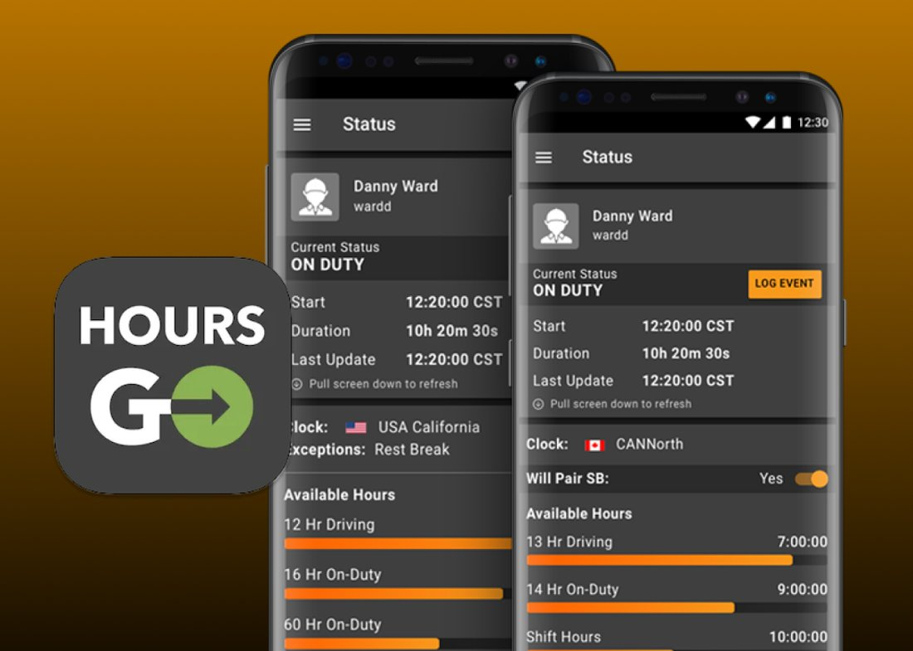
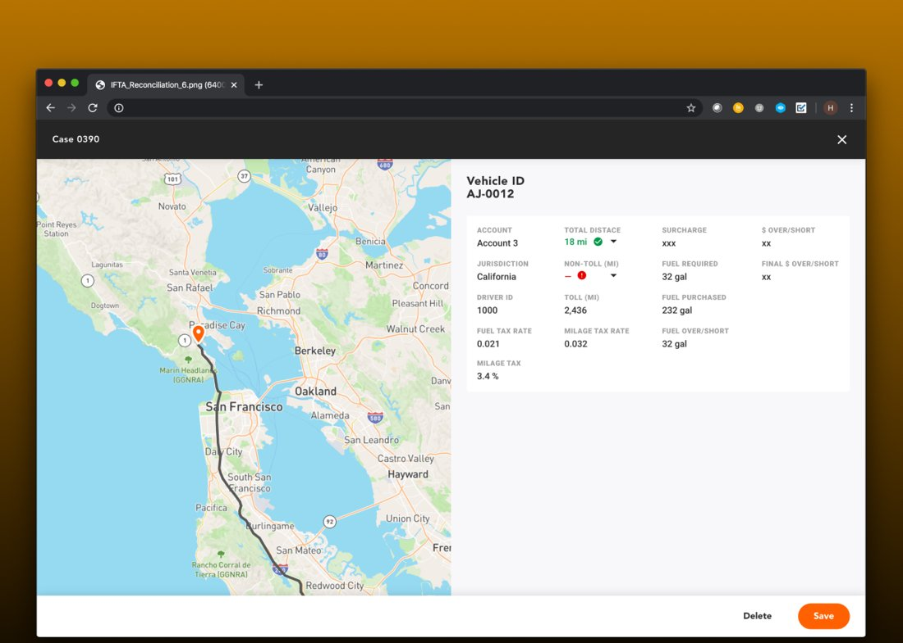
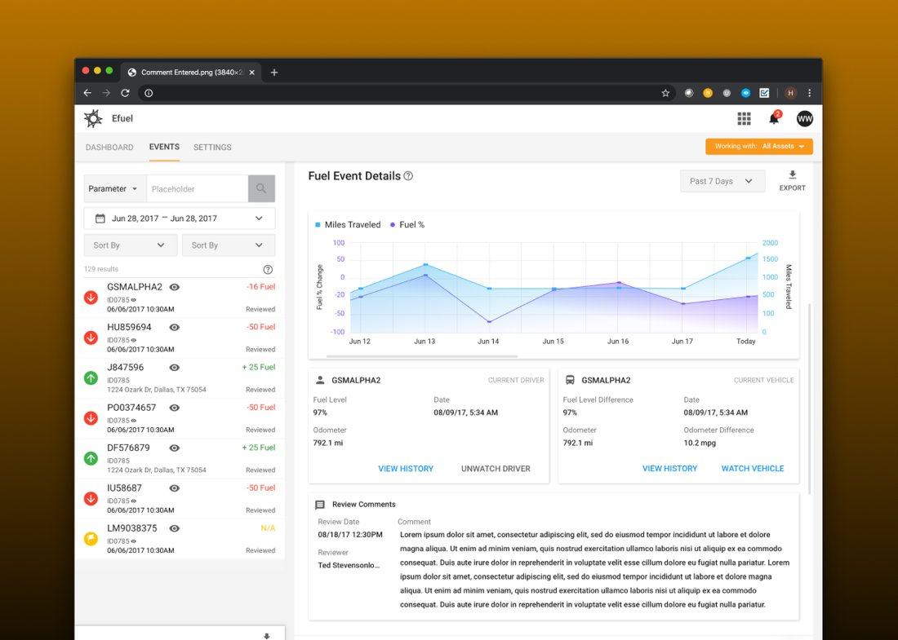
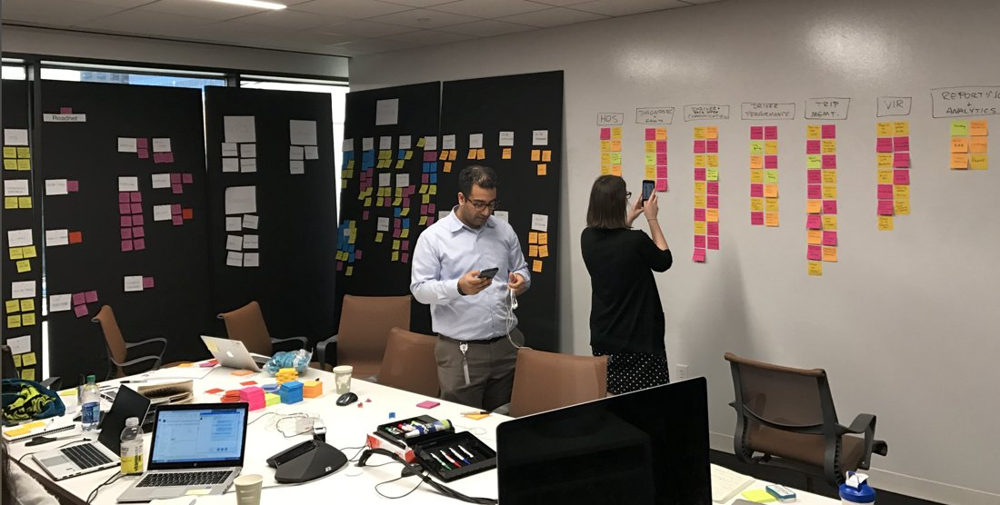

One of the world's largest fleet-management platforms (hundreds of thousands of vehicles across dozens of countries) grown by acquisition into a fragmented, high-cognitive-load ecosystem.
Omnitracs had grown through acquisitions into a patchwork of products spanning mobile, web, cloud, and IoT hardware. Professional operators faced high cognitive load and inconsistent interfaces, and design lacked standards, process, and credibility.
The job was to raise the bar, and make dense operational data feel calm and usable for people making decisions on the road.

I joined a team that was scoped to one project at a time. I rebuilt it as a strategic function: product partnership, design systems, and a seat at the table for roadmap decisions. I founded the UX research practice as part of this and made it a discipline of shipping rather than presenting.

Because Omnitracs grew by acquisition, customers were stuck navigating disconnected products with different logins, different language, and different mental models for the same tasks, while usability and technical debt piled up. I audited the legacy platforms, mapped where they overlapped and conflicted, and defined migration paths toward a single, coherent platform. I led the design integration of acquired products, including Blue Dot. I also built logic blocks, a modular, framework-agnostic design system spanning mobile, web, cloud, and IoT, and I architected an ML next-best-action framework that surfaced the right move at the right moment across the operator's day.

Trucks are a hard research environment. I went into cabs, distribution yards, and dispatch centers to watch the work, then translated what I saw into design patterns the broader team could ship against. The product changed when the room had pictures of an actual driver leaning over an in-cab screen.

Command was the operator's home base: dispatch, telematics, exceptions, video. I designed the structure that made it possible to live in one product all day instead of switching between five.

Drive was the in-cab driver application. I led the redesign to make it a calmer, more legible companion across a 12-hour shift, with workflows for HOS, inspections, messages, and stops.

Mobile Manager gave fleet managers a phone-sized version of the dispatcher console. I designed the patterns that let them act on exceptions away from the desk without losing context.

HoursGo brought hours-of-service compliance to the driver's phone in a way that respected federal rules and the realities of a long haul. I led the design with research alongside drivers and operators.

Tax Manager handles fuel-tax reporting that operators previously paid third parties to compile. I led the design so fleet managers could file in-house without becoming compliance experts.

Exact Fuel turned fuel telematics into a routing tool. I designed the surfaces that showed dispatchers which fuel stops actually reduced cost, factoring in IFTA, network discounts, and route deviation.

Logic let dispatchers build routing rules without code. I set the design direction and my team and I built it together (the block-based editor and the rule library) so a non-technical user could automate dispatch decisions and see the results before publishing them. It's some of the work I'm proudest of, and it took the whole team to get there.